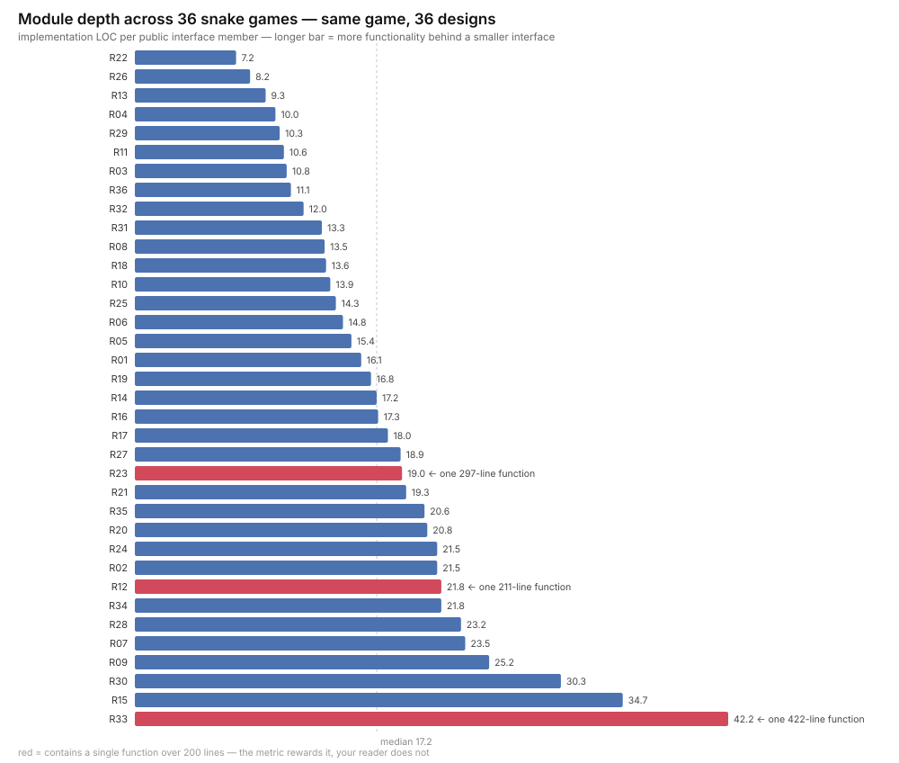

Lecture 3 (demo): Complexity, measured on your own code
Companion to Lecture 3. Every number on these slides comes from the 36 snake games this class submitted last year.
Last year's code
These 36 repositories are yours — the snake games this class submitted last year.
| Repositories | 36 |
|---|---|
| Groups | 42 |
| Students | 113 |
| Lines of code | 121 – 1,570 |
Same core game in every one. Different design in every one.
Today you read someone else's, and someone else reads yours.
Drill A — The Swap
Your group has been assigned someone else's repo. Find your code (A01–A42) on the sheet.
25 minutes. No compiler. Reading only. Split the questions across your group.
- Where do I change the snake's speed?
- Where do I change what happens when it eats the fruit?
- Two snakes on one board — player 2 on
WASD, both eat the same fruit, each keeps their own score. Which functions must change? - One line — what single design change would most reduce the cost of the next change to this code?
Answer in your row. file:line, not prose.
Rule for the whole hour. Findings name files and lines, never people. Every repo here compiles and works — which is more than most software achieves. The question is not whether it is good. The question is what it costs to change.
Q3 is the lecture
Q1 and Q2 are findable. Q3 is the one that matters.
A second snake forces you to find every place that assumes there is exactly one. Where does the snake's state live? Who owns the board? Who decides collisions? Who draws?
If Snake is a type, the answer is "construct it twice". If the snake is a global
array plus a global direction plus a global length, there is no answer shorter
than reading all of it.
That is unknown unknowns — Lecture 3's worst symptom. You won't find out about it until bugs appear after you make a change.
Two repos, same job
Nevil-Nandasana/Snake-Game |
Jeet0105/SnakeGame |
|
|---|---|---|
| High score saved to a file | yes | yes |
| Menu screen | yes | yes |
| Obstacles | yes | yes |
| Pause | yes | yes |
| Lines of code | 925 | 789 |
| Source files | 1 | 9 |
Same four features. Comparable size. One file against nine.
Whatever differs between these two is design — not ambition, not effort.
A25 and A32 reviewed the same repo independently, without conferring.
Two groups who never spoke found the same problem. Design defects are not taste.
Depth, measured
Interface is the cost a caller pays. Implementation is the benefit they get.

Find your bar. Range 7.2 to 42.2, median 17.2 — a six-fold spread on one game.
The result nobody expects
The deepest module in this class is the one with a god class.
sagar-dot-bera/ByteHebi |
maitry4/code_crafters |
|
|---|---|---|
| Lines | 929 | 890 |
| Classes | 5 | 19 |
| Public interface members | 22 | 109 |
| Depth | 42.2 — highest | 8.2 — near lowest |
ByteHebi's entire Game class is public in exactly three places:
Game(int width, int height, const std::string &name = "Player");
~Game();
int run();
18 data members and 9 more methods are private. You cannot see them, so you do
not have to learn them. That is a deep module, exactly as defined last lecture.
code_crafters split the same game into 19 classes and made 109 things public.
Every split that exposed an internal made the interface bigger.
More classes is not better design. Decomposition is not the goal. Information hiding is.
But depth is not sufficient
ByteHebi has a beautiful interface and this behind it:
source/game.cpp:315 void Game::render() const 422 lines
source/game.cpp:109 void Game::processInput() 203 lines
A 422-line function is a fine score and an unreadable morning. Depth measures the interface; it says nothing about the interior.
Corpus-wide: 46 functions over 60 lines. The red bars on the chart are repos carrying one over 200.
Both must hold. Small interface and no unit you cannot hold in your head.
The third failure: two of everything
Five repos define the same class in more than one file:
| Repo | Classes defined twice or more |
|---|---|
Shiroilt/solo-leveling… |
Point Snake Food GameBoard GameManager HighScore HighScoreManager |
24Chessman/SnakeX |
Snake Food Game GameBoard Position Terminal |
202512057Meetsheth/Debug-Thugs |
CyberSnake Fruit Pt Raw TermSize |
Neel1585/Snake_Game |
Snake Food GameBoard node |
Shiroilt ships three copies of the whole game: modular headers, a monolithic
game.cpp that redefines all seven classes, and a third copy in test.cpp.
Fix a bug in one. The other two still have it, and they look authoritative.
The metric trap
I ran a design-smell scanner over all 36 repos. It ranked ByteHebi 31st of 36 — near-cleanest.
Its rule for oversized functions never fires on void Game::render() const,
because it does not recognise Class::method definitions. It looked straight
past a 422-line function and reported the repo as clean.
And the depth metric I just ranked you with? It scores that same 422-line function as excellent.
Every metric on these slides is a proxy. Both of mine can be gamed by writing one enormous function. I showed you
max_unitnext todepthprecisely because neither survives alone.
You will be tempted to optimise the number. Optimise the change cost.
The five lines this was always trying to be
class SnakeGame {
public:
SnakeGame(int w, int h, unsigned seed);
void handle(Input);
void tick();
bool isOver() const;
const Board& board() const;
};
Five members. Same game as all 36. Resizing the board is one argument.
You already know this shape — it is open / read / write / lseek / close
from last lecture, wearing a different name.
Take away
- Change amplification — count how many places a change reaches, not how many lines it edits.
- Cognitive load — 46 functions here are over 60 lines. That is the interior.
- Unknown unknowns — if nobody in your group could answer Q3, that is the symptom, not a skill issue.
Depth is necessary. It is not sufficient. And no number replaces reading the code.
References
- Chapter 2, 4 — A Philosophy of Software Design, Ousterhout
Appendix — Drill B
Not part of the 50-minute hour. Use it if Drill A finishes early, or as the opening of the next session.
Drill B — Resize the board
One change request:
The board is 20 × 12. Make it 40 × 15.
Not a feature. Not a redesign. One number, twice.
Heer117/Snake_Game |
CharmiBhayani/SnakeCycle |
|
|---|---|---|
| Source files | 1 | 1 |
| Lines | 244 | 862 |
| Dimension declared | 2 | 2 |
| Dimension referenced | 12 | 47 |
| Lines to inspect | 10 | 37 |
| Hardcoded offsets on a dimension | 2 | 22 |
| Positioning calls with a baked-in row | 0 | 18 |
Both are a single file. Both declare the board size exactly once. File count is not the variable here — and that is the point.
The 18
Console::gotoxy(width + 5, 5);
Console::gotoxy(width + 5, 10);
Console::gotoxy(width + 5, 12);
Console::gotoxy(width + 5, 13); // ...and 14, and 15
Nobody wrote a bug. Somebody wrote width + 5 when 20 was narrow enough for the
HUD to fit beside the board, and 12 because the board happened to be 12 tall.
Change the board and the HUD lands on top of the game.
The dimension was declared once. The assumption that the board is small was restated 18 times, in no variable at all — so there is nothing to change.
Heer117 never writes a literal position: every draw is a loop over WIDTH and
HEIGHT. It resizes correctly on the first try, in 244 lines, in one file.
A decision you named once costs one edit. A decision you assumed costs you every line that assumed it — and those lines do not announce themselves.
Goal of good design: reduce the amount of code affected by each design decision. — Lecture 3